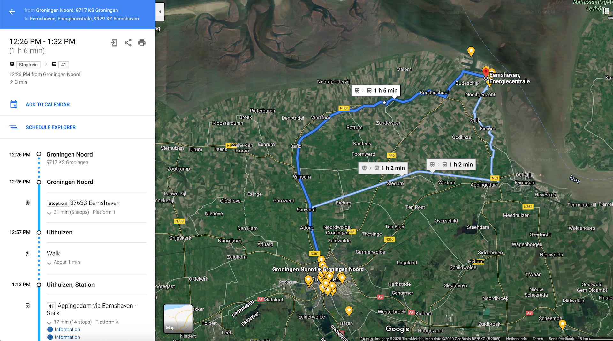
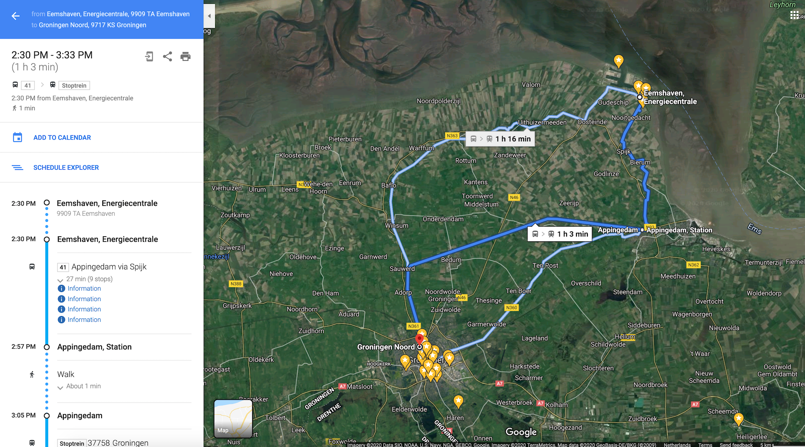

A travel diary to digital infra region in the Northern Netherlands
14.08.2020
The last hot day just before the intense summer heat was over. Sunny but occasionally cloudy.
- Depart: Groningen Noord station
- Destination: Bus stop Energiecentrale in Eemshaven
- Transportation: Train (Arriva Stoptrein) and Bus (Qbuzz bus 41)
- Transit section: Station Uithuizen (train to bus)
- Duration time for one way: 1h 6min
- Total travel time: around 3h
- Accompany: no
- Items brought: Camera, Tripod, Voice Recorder, Smartphone, Water, Snacks, Outer, Backpack, OV-chipkaart(public transportation card in the Netherlands), Note, Pen
- Observed at the site: coal hills, cable signs, transmutation towers, heavy vehicles, hotel ad sign, QTS data center, Google data center, Cobra Eemshaven, unknown buildings, wire entanglements, warning signs, flowers, grass, but stop, road signs, industrial sounds, pipe, wind power generators, cars, bus information board (41 bus - Appingedam - Uithuizen, 160 bus Datacenter - Groningen, Hoofdstation)
Journal
On Friday, around noon, I left NP3 gallery and headed off to the Groningen Noord station. It's the day for my field research on digital infrastructure in the northern Netherlands area. I took a train 'Arriva', which is heading for Eemshaven area. I got off at Uithuizen station to transfer to the bus. The bus 41 departs every 1 hour. I was standing at the bus stop in front of the train station while waiting for the bus.
The bus was already there, but I didn't notice at first. Because it was a much smaller bus than regular buses. I would have missed the bus if the bus driver didn't drive closer to me to open the door. How kind he was! Anyways, I could take the black minibus and travel to the more northern-west side. The bus driver asked where's my destination. I replied him, "Energiecentrale." I was the only passenger on the number 41 bus. It took around 15 minutes to get my destination. No one got on the bus in the meantime. While heading to Energiecentrale, the driver asked me if I am working there. I said, "haha, no! I'm just going there to take some pictures for my project." He smiled, but he must have thought I'm a weird foreign traveler. We had a bit of small talk after that. I told him that I studied in Groningen but never have been to Eemshaven area. I saw lots of industrial landscapes passing-by through the window. Huge coal hills appeared continuously. Wind power generators were here and there in the whole region.
The bus arrived at Energiecentrale. I said, "goodbye." The bus driver said, "good luck!"
After getting off the bus, I was standing in front of the one-way-road between small bus stops. On the side I got off, there are wire entanglements preventing anyone from crossing over farther from there. I could see the wind power generators and grasslands over the fence.
I crossed the road and there, infrastructures of digital technology were lined.
I walked along the road to more west side about several minutes, taking photos of infrastructures. While I was walking, several cars were passing by. And there was a heavy vehicle coming. The driver inside got my eyes. We said hello by waving our hands to each other.
Suddenly the pavement stops and only a road for the car left. So I couldn't walk further as it seems dangerous for the heave vehicles. I thought it would have been better to ride a bike than walking for this tour.
Still, I was the only passenger walking around there. Mostly it was quite silent, but I could also hear mixed industrial sounds. I found several yellow signs which seem to indicate the underground cables buried on the spot. Although I cannot be sure of that 100%, as I don't read and speak Dutch! But on some of the signs, there was undoubtedly written 'Kabel('the word 'cable' in Dutch).'
I also found an interesting sign of advertising 'Eemshotel.' I thought, in case if I get lost, there will be a place to sleep. What a relief!
I saw QTS data center, coal plant, and massive transmission towers. I also found COBRA cable company, which serves the submarine cable connecting the Netherlands and Denmark. Yellow signs continually appeared. I couldn't figure out what some of the other buildings are.
Two people were riding the bike along the road. They seemed ordinary people who are not workers in there. They passed me and faded away.
I took some pictures of grass and flowers.
There was an orange-colored pipe stuck among the grass out of the blue. I wonder what this means.
I took some pictures of the road signs as well.
I remembered I could see more infra landscapes while taking the bus. Thus, I decided to retake the number 41 bus to go further west to see more infrastructures.
I went back to the bus stop. I checked the bus timetable. There were 2 buses actually coming here.
One is the number 41 bus, which I took, and the other is number 160, which actually is making a round trip between Groningen to Datacenter. But it operates only a few time slots during the commute time. I guess this buss will be mainly for the workers here.
While waiting for the 41 bus, I looked around some advertisements on the bus stop's glass wall. One poster was about the voluntary cleaning up event in the region to remove the trash.
I was waiting a bit, and the Qbuzz arrived. I took it in the same direction as I got off. I headed off to the more west side.
I saw more infrastructures passing by through the window. There was Google data center. Wire entanglements surround outside of the data center area. More wind power generators and factories(or buildings) came into my sight. Then suddenly, the industrial resign ended. The bus entered into the village area. I saw houses. The bus swam across the small village.
I told the driver I will get off at the Appingedam station to take the train back to Groningen. The bus arrived.
I got off the bus and said, "thanks and tot ziens('see you' in Dutch)!" to the bus driver. I walked inside of Appingedam train station and got in the train 'Arriva' heading for Groningen. After about 30 minutes, I came back to the Groningen Noord station.